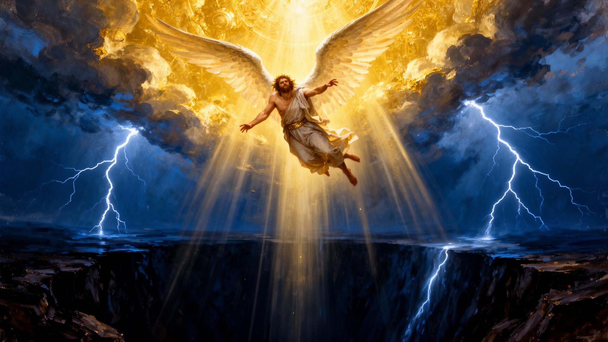
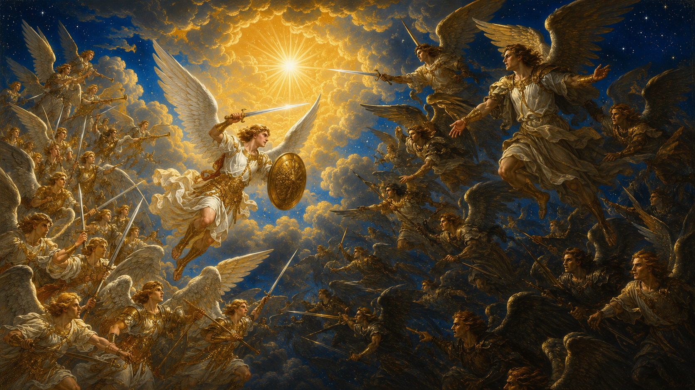
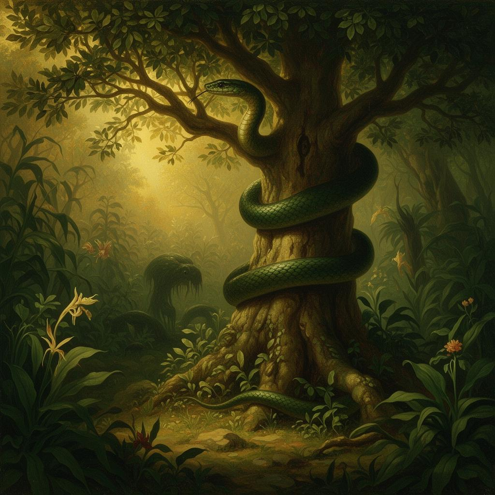
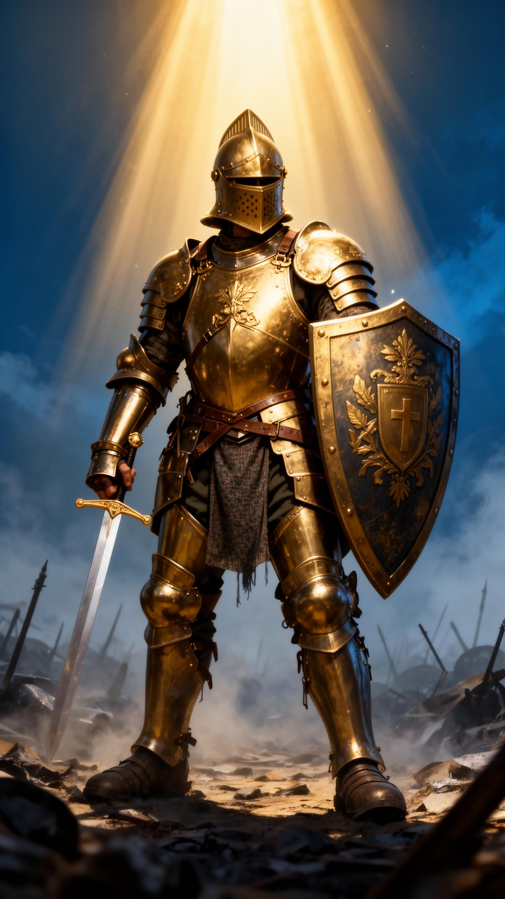
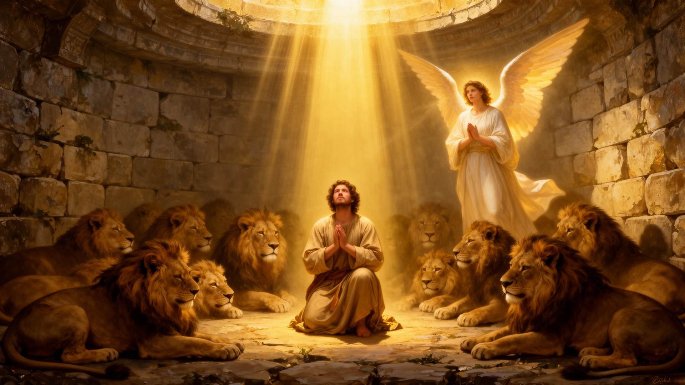

“Desde o princípio, a grande controvérsia tem sido sobre o caráter de Deus, a Sua lei e Seu governo no universo.”
O Grande Conflito é a chave que abre toda a Bíblia. Não se trata apenas de uma guerra entre o bem e o mal — é uma controvérsia cósmica sobre o caráter de Deus, travada diante de todo o universo. Tudo começou no Céu, no coração de um ser perfeito, criado para refletir a glória do Criador, e culminará na Terra restaurada, quando o pecado nunca mais se levantará.
Este estudo nos convida a olhar para o invisível: anjos e demônios, batalhas espirituais, profecias e promessas. É o convite para escolhermos, conscientemente, de que lado da história queremos estar.
A Bíblia revela a origem, a glória e a queda de Lúcifer usando duas figuras humanas como espelho: o rei de Tiro (Ezequiel 28) e o rei da Babilônia (Isaías 14). Por trás desses governantes orgulhosos, o profeta enxerga o ser celestial que primeiro se ergueu contra Deus.
“Tu eras o sinete da perfeição, cheio de sabedoria e perfeito em formosura… perfeito eras nos teus caminhos, desde o dia em que foste criado, até que se achou iniquidade em ti.”Ezequiel 28:12, 15
“Como caíste do céu, ó estrela da manhã, filho da alva! Tu dizias no teu coração: ‘Subirei ao céu… serei semelhante ao Altíssimo.’”Isaías 14:12-14
Lúcifer — cujo nome significa “portador da luz” — era um querubim cobridor, posicionado junto ao trono de Deus. Foi criado perfeito, mas permitiu que o orgulho germinasse em seu coração. Quis ocupar o lugar do Criador. A iniquidade encontrada nele não veio de fora: nasceu de uma escolha livre.


Quando Lúcifer espalhou suas insinuações contra o governo divino, conseguiu arrastar consigo uma terça parte dos anjos. O apóstolo João descreve essa multidão simbolicamente:
“A sua cauda arrastou a terça parte das estrelas do céu e as lançou sobre a terra.”Apocalipse 12:4
No Céu houve guerra. Não com armas de metal, mas com princípios, lealdades e verdade. Miguel — o Cristo pré-encarnado, o Príncipe das hostes celestiais — e Seus anjos enfrentaram o dragão e seus anjos:
“E foi precipitado o grande dragão, a antiga serpente, chamada diabo e Satanás, que engana todo o mundo; ele foi precipitado na terra, e os seus anjos foram lançados com ele.”Apocalipse 12:7-9
Os anjos fiéis permaneceram firmes na verdade; os rebeldes foram expulsos. O conflito, então, mudou de cenário — e a Terra se tornaria o palco onde Deus revelaria, diante de todo o universo, o verdadeiro caráter de Satanás e o Seu próprio amor.
Satanás não veio à Terra com exércitos. Veio com uma pergunta. Tomou a forma de uma serpente — uma das criaturas mais belas do Éden — e abordou Eva junto à árvore do conhecimento do bem e do mal:
“É assim que Deus disse: ‘Não comereis de toda a árvore do jardim’?”Gênesis 3:1
A estratégia foi sutil e devastadora:
Eva viu, desejou, comeu e deu a Adão. Em um instante de desconfiança, a humanidade saiu do lado da fidelidade e entrou na grande controvérsia (Gênesis 3:1-6).

Em pouco tempo, o pecado havia consumido o coração humano de forma tão profunda que a própria Escritura registra:
“E viu o Senhor que a maldade do homem se multiplicara sobre a terra e que toda a imaginação dos pensamentos de seu coração era só má continuamente.”Gênesis 6:5
“O Senhor, vosso Deus, que vai adiante de vós,
ele pelejará por vós, conforme tudo o que fez
convosco no Egito, diante dos vossos olhos.”— Deuteronômio 1:30
No meio da batalha, esta é a promessa central do Grande Conflito: não lutamos sozinhos. O Deus que abriu o Mar Vermelho é o mesmo que vai adiante de nós hoje.

Paulo escreve aos efésios sabendo que o conflito é real. Ele descreve um soldado romano para nos ensinar a lutar com armas espirituais:
“Portanto, tomai toda a armadura de Deus, para que possais resistir no dia mau e, havendo feito tudo, ficar firmes.”Efésios 6:13-18
Compartilhe com um amigo: a vitória não está em nossa força. Está em vestir, dia após dia, o que Deus oferece. Quando oramos, lemos a Bíblia, escolhemos a verdade e confiamos em Cristo — estamos completamente armados.
A Bíblia mostra que os anjos fiéis nunca deixaram de servir. Eles acampam ao redor dos que temem ao Senhor (Sl 34:7), são espíritos ministradores enviados em favor dos herdeiros da salvação (Hb 1:14) e participam ativamente do Grande Conflito a cada dia.

Por orar três vezes ao dia, Daniel foi lançado na cova dos leões. Mas Deus enviou Seu anjo, que fechou a boca dos leões. Pela manhã, o rei o encontrou ileso. Fidelidade tem proteção celestial.
Depois de quarenta dias enfrentando as tentações de Satanás, Jesus venceu citando a Palavra de Deus. Então, “vieram os anjos e o serviram” — fortalecendo-O. Quem resiste ao mal recebe socorro do Céu.
Os apóstolos foram presos por pregar a Cristo. De noite, um anjo do Senhor abriu as portas da prisão e os mandou voltar ao templo para anunciar “as palavras desta vida”. O Evangelho não pode ser acorrentado.
Em grupo, escolha uma das histórias acima e encene-a em um culto jovem, devocional ou acampamento. Depois, faça um desenho representando o Grande Conflito — duas forças, duas escolhas, e a cruz no centro — e explique o seu significado para o grupo.
Escrito por Ellen G. White, é o último volume da série Conflito dos Séculos e percorre a história da Igreja desde a destruição de Jerusalém até a Nova Terra.
Para a Igreja Adventista, o Grande Conflito não é só salvação pessoal — é a defesa do caráter justo e amoroso de Deus diante de todo o universo.
Na cruz, o disfarce do inimigo foi removido. Os anjos e mundos não caídos viram, finalmente, o verdadeiro caráter da rebelião — e o amor sem limites de Deus.
Apocalipse 20-22 garante: o mal será erradicado, a morte não existirá mais, e Deus habitará com Seu povo. O conflito termina; o amor permanece.
O Grande Conflito teve início no Céu, foi travado nesta Terra e terminará na cruz e no retorno de Jesus. Até lá, somos chamados a ser mensageiros, soldados e amigos d’Aquele que já venceu.
“Estas coisas vos tenho dito para que em mim tenhais paz.
No mundo tereis aflições, mas tende bom ânimo: eu venci o mundo.”João 16:33